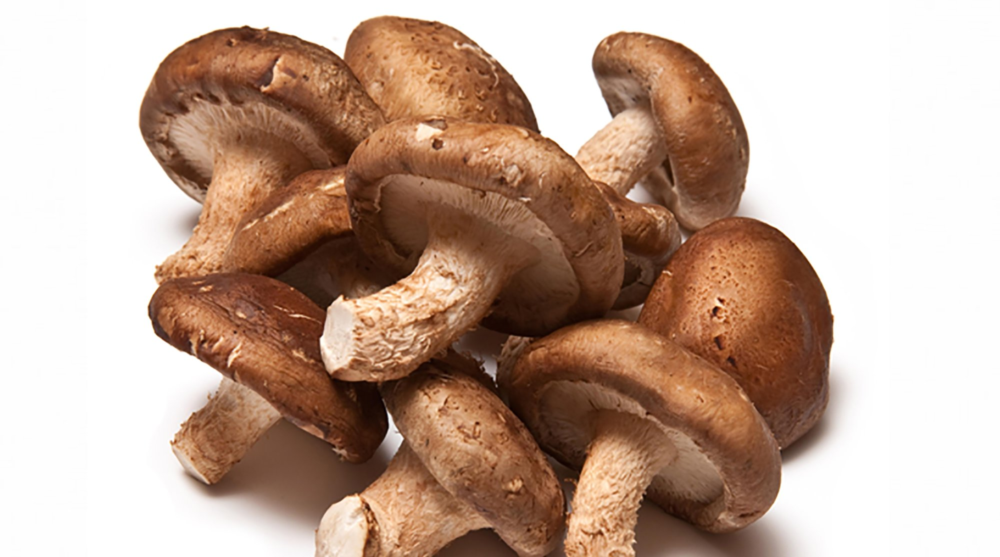

1.- Pleorotus 14/3/2022

Es un género de setas con el himenio laminado que incluye a algunas especies comestibles de gran interés comercial, como el champiñón ostra o la seta de cardo.
2.- Ganoderma Lucidum14/3/2022

Ganoderma lucidum es un hongo basidiomiceto de la familia Ganodermataceae, llamado en español pipa, por la forma que suele presentar su carpóforo o seta. Se encuentra distribuido por las zonas de clima templado de todo el mundo.
3.- Ostra 14/3/2022
champiñón ostra o pleuroto ostra es una especie de hongo basidiomiceto del orden Agaricales. Se distribuye por gran parte del Holártico, en zonas templadas, aunque se cultiva en muchas partes del mundo.
4.- Shiitake 14/3/2022
La seta china o shiitake es una seta comestible de color marrón y aroma intenso originaria de Asia Oriental. Suele encontrarse más a menudo deshidratada que fresca y se añade a sopas, revueltos y otros platos para hacerlos más sabrosos.
5.- Cordyceps 14/3/2022
El Cordyceps sinensis (Cordyceps, Dong Chong Xia Cao), una hierba medicinal también conocida como hongo de la oruga china, es uno de los ingredientes utilizados más comúnmente en la medicina china tradicional para el tratamiento de los pacientes con nefropatía crónica (NC).